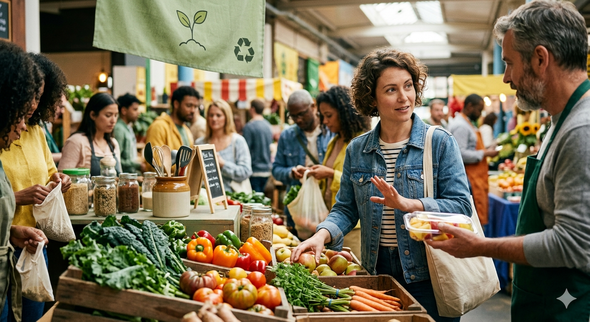
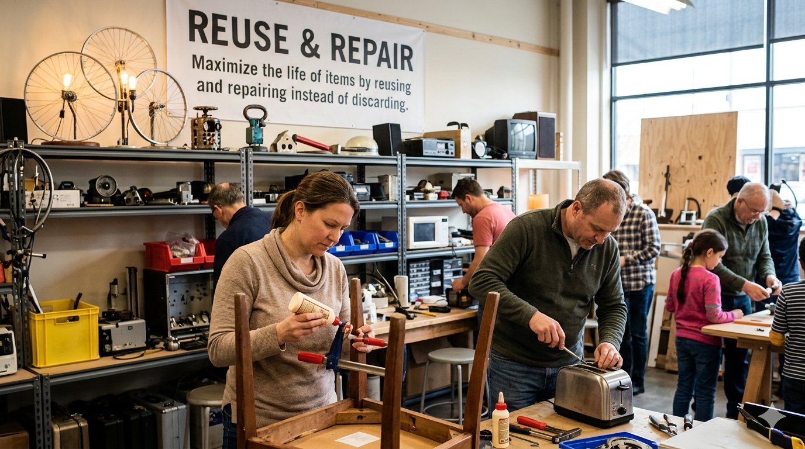
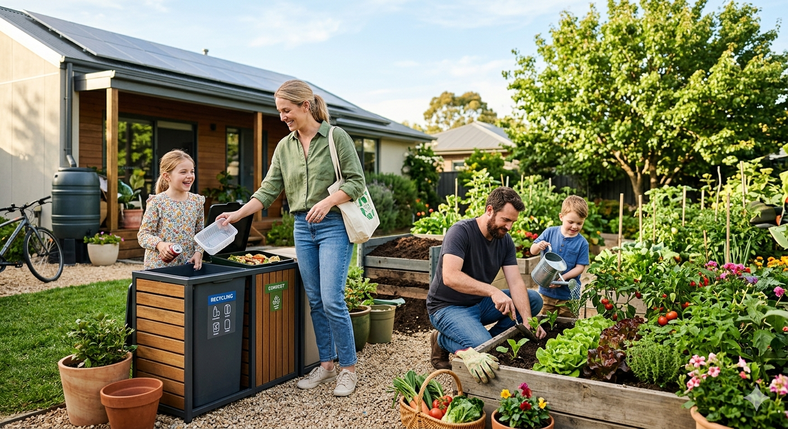

Refuse & Reduce
The first step in caring for our environment is learning to refuse unnecessary products and reduce the amount of waste we produce. Every single item we choose not to buy or every piece of packaging we avoid helps decrease pollution, saves energy, and conserves the Earth’s precious resources. By practicing refuse and reduce, we take conscious control over our consumption habits, thinking critically about what we truly need versus what is wasteful. This mindset not only lessens our personal environmental footprint but also inspires others to make responsible choices in their daily lives.

Reuse & Repair
Instead of throwing away items that are still useful, reusing and repairing them gives objects a longer life and reduces the pressure on natural resources. Old containers, clothing, electronics, and even furniture can often be repurposed or fixed rather than discarded. By reusing and repairing, we lower the demand for new products, minimize waste in landfills, and encourage a culture of sustainability. This practice teaches creativity, responsibility, and resourcefulness while showing how small individual actions can collectively make a significant impact on our planet.

Recycle & Sustainable Living
Recycling transforms waste into new materials, turning what would have been discarded into something valuable. When combined with sustainable living practices—like conserving energy, using eco-friendly products, and supporting green initiatives—recycling helps reduce greenhouse gas emissions, preserve natural resources, and maintain biodiversity. Sustainable living is more than just a habit; it’s a commitment to making choices that benefit the environment, society, and future generations. By embracing recycling and sustainability, we contribute to a cleaner, healthier, and more resilient planet, ensuring that the Earth can continue to provide for all living beings.